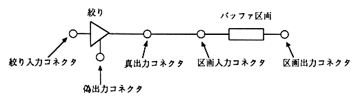
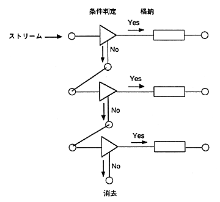

The selector processing function does not depend on the selector or device to be connected. Simply separate and store the input stream and output it on demand.
Figure 5.3 shows the selector structure.

Figure 5.3 Selector structure (initial state)
The initial state of the selector is the state where the same numbered aperture and compartment are connected through the true output connector and compartment input connector. Other connectors are not connected.
5.3.1 Aperture
Set the conditions (FAD range, subheader) of the sector to be passed to the aperture. Sectors that match the conditions are output to the true output connector and stored in the destination buffer partition. Other sectors are output to the fake output connector.
∙ The fake output connector can be connected to other aperture input connectors, and the same selection process is performed one after another.
∙ Sectors output from unconnected output connectors are deleted.

Figure 5.4 Schematic diagram of stream selection process